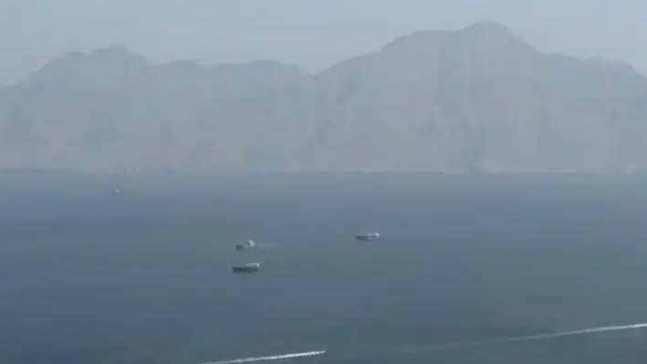

10月13日，市场监管总局通报：自2023年8月开展加油机计量作弊综合治理以来，全国共查处加油机作弊案件399件，涉案金额27亿元，罚没金额143亿元，移送公安机关案件95件，刑事拘留200人，查实偷逃税6.4亿元。其中，专项行动中直接查办加油站78家。
作弊手段并不新鲜：在加油机内部加装遥控或计量芯片，让显示数值与实际出油量"两张皮"。有报道提到，部分设备甚至能通过遥控随时切换"作弊/正常"模式，规避检查。
143亿的罚没，背后是无数车主被悄悄多收的油钱。
所以这次通报的分量，不只是罚了多少，而是把"加油也可能被偷"这件事，摆到了明面上。
表层看，是个别商家黑心；但更深一层，是技术壁垒与监管盲区长期并存。加油机计量涉及硬件、软件、税务、计量多方，普通车主根本无法现场核验"加了多少"，只能信任屏幕数字——这种信任，正是最容易被滥用的地方。
第二个原因是违法成本曾长期偏低。过去即便被发现，处罚往往不足以形成震慑；而一次作弊的获利空间又足够大，导致"被查概率×罚款"算下来仍是划算的赌局。此次重罚+移送刑事，正是把赌局清零。
还有一点：部分作弊与偷逃税、虚开票据交织，形成了一条灰色链条，单靠一个部门很难根治，需要市场监管、税务、公安协同。
能藏这么久，靠的不是高明，而是消费者的"看不见"和过去的"罚不动"。
从监管视角看，此次综合治理释放了清晰信号：作弊加油机要"断根"，得靠技术防篡改（如编码器与计量芯片一体化、数据实时上传）+全链条执法+公众参与举报的组合拳。让作弊"一动手就被发现"，比事后重罚更治本。
对车主而言，几件实事可做：留意加油前后里程与金额是否异常、尽量选口碑稳定的正规站点、发现可疑及时向12315或市场监管部门反映。集腋成裘的线索，正是锁定作弊站的关键。
更长远看，计量诚信是营商环境的底色。把"每一滴油"都量准，守的不仅是钱包，更是公众对市场的信任。
罚没143亿是结果，让作弊"无处下手"才是目的。
回到那台加油机：屏幕跳着数字，油箱却在悄悄"缩水"。78家被查、143亿罚没，撕开了这块长期被忽视的灰色地带。
加油是每个车主都躲不开的日常，正因如此，它的计量诚信格外重要。这次整治是一个节点，但不是终点——只有让技术盯住机器、让监管盯住链条、让公众敢举报，我们加的每一升油，才真正"足斤足两"。